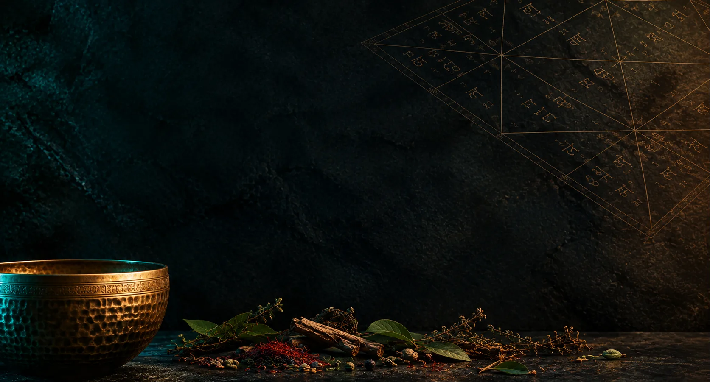

Integral Accompaniment
Long-term individual programs combining Ayurveda, Jyotish, sound therapy, and yoga for sustainable inner transformation.
Practical Application
Diagnostics through the Prism of Gunas and Doshas
By understanding a person's state, the master can see where stagnation and density prevail (Tamas / excess of Kapha), where mental or emotional chaos is raging (Rajas / imbalance of Vata and Pitta), and what the person's potential for clarity is (Sattva). This allows for pinpointing the exact root of the imbalance, rather than just working with the symptoms.
Working with Jyotish
An astrological chart helps to see the original constitution (Prakriti) and the current planetary periods that amplify certain doshas or plunge the mind into the heaviness of the gunas, indicating precise time windows for corrective work.
Somatic Therapy
Through bodily practices and breathing, the master removes muscle armor and chronic spasms caused by Tamas, and transforms the chaotic energy of Rajas, restoring fluidity and softness to the body.
Sound Therapy
The use of Himalayan bowls and precise acoustic vibrations serves as a direct conduit for Sattva. Low, dense bowls ground the excess of Vata, while octave intervals and pure overtones calm the rajasic mind and destroy tamasic blocks in the tissues.
Ayurvedic Approach
Correction of lifestyle, nutrition, and sensory perception helps maintain the balance of the primary elements in the body, moving a person from a state of constant stress and disharmony into a state of inner stability and profound clarity.
Program Options
🌱 «Basic Immersion» Program
/ 1 month
Online
4 sessions
🌱 «Basic Immersion» Program / 1 month
For whom: An excellent start for those who want to try a comprehensive approach and get initial results, but aren't ready for long-term work yet.
Jyotish & Ayurveda
- • Calculation of the natal chart and analysis of key planets.
- • Determination of Prakriti and Vikriti.
- • A sample weekly menu tailored to your type and the season.
Yoga & Sound
- • A gentle sequence (5–7 asanas) and a simple breathing practice.
- • 4 online sound therapy sessions (vocal meditations with bowls).
Result: A holistic picture of your state, basic tools for harmonization, a gentle bodily sequence, and an experience of deep sound relaxation.
🌿 «Sustainable Balance» Program
/ 2 months
Online
8 sessions
🌿 «Sustainable Balance» Program / 2 months
For whom: For those who want to solidify changes and see dynamics. Ideal for chronic fatigue, burnout, and difficult life periods.
Jyotish & Ayurveda
- • Natal chart analysis, periods (dashas), and transit forecast for 2 months.
- • Detailed nutrition plan, selection of herbs and spices.
- • Adjustment of the plan based on the results of the first month.
Yoga & Sound
- • A sequence of 7–10 asanas + two breathing practices tailored to your request.
- • 8 online sound therapy sessions (bowls + additional instruments).
Result: You solidify new habits, improve sleep and digestion, and sound meditations reveal your inner resources.
🌟 «Transformation» Program
/ 3 months
Online
12 sessions
🌟 «Transformation» Program / 3 months
For whom: The "maximum" level for those ready for deep changes, a complete overhaul of habits, and internal mindsets with our continuous support.
Jyotish & Ayurveda
- • Full chart analysis, forecast for 1 year + compatibility analysis.
- • Deep diagnostics of doshas, tissues, and channels. Ayurvedic practices.
- • Analysis of emotional patterns.
Yoga & Sound
- • A full sequence (10–15 poses) integrated with astrology.
- • 12 online sound therapy sessions synchronized with the season.
Result: Ascending to a new level of energy and balance. The body becomes flexible, the mind calm, and sound meditations turn into a reliable tool for self-healing.

How to Book?
Write to me in a messenger — we will hold a free introductory chat, discuss your request, and I will help you choose the appropriate mentorship format.